FREEPLANE
См. Справку Предыдущие версии Freeplane для Freeplane 1.1.3. Ниже приведена справка для Freeplane 1.2.x
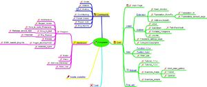
Установка стабильной версии для Windows происходит автоматически. В других случаях обратитесь к установке для различных операционных систем ниже. Для Macintosh также описаны эквивалентные для Windows кнопки мыши и специальные клавиши.
Freeplane работает в любой операционной системе, в которой установлена последняя версия Java.
Меню Freeplane переведены на многие языки. Для многих языков доступны словари для проверки орфографии.
Если вы хотите предоставить перевод учебника или документации на вашем языке, посмотрите, как это сделать .
Стандартная функциональность Freeplane может быть расширена различными способами:
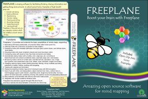
Установка (разрабатываемая версия)
Freeplane быстро развивается. Если вы хотите использовать новейшие функции, рассмотрите возможность использования бета-версии. Кроме того, вам предлагается принять участие в тестировании предварительных версий.
Бета-версия - это полная версия Freeplane со всеми новыми функциями новой стабильной версии, которая устанавливается так же, как и стабильная версия, с файлом настроек, который автоматически установит Java. Перейти к бета-версии , скачать Freeplane-SetupXXX.exe и выполнить этот файл. Для операционных систем, отличных от Windows, см. Категория: Система . Читайте здесь об изменениях между версиями программы.
Установить последнюю предварительную версию
Предварительная версия содержит новые функциональные возможности, над которыми все еще работают программисты. Установка предварительной версии предполагает, что на вашем компьютере установлена Java.
Перейдите к предварительному просмотру и загрузите Freeplane_bin-XXXX.zip, в котором XXXX - это номер версии, показанный на рисунке. Распакуйте zip-файл в любое место. Если вы хотите протестировать только новую версию: в Windows нажмите freeplane.exe; Вы также можете подключить freeplane.exe к панели задач. Если вы хотите, чтобы новая версия запускалась автоматически, если вы щелкнете мышью по любой карте, просто замените каталоги более старой версии на каталоги более новой версии. Для других операционных систем см. Категория: Система . Читайте здесь об изменениях между версиями программы.
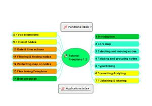
Учебник дает довольно полное введение в основные функции Freeplane. Это может помочь сначала изучить руководства. Детали обсуждаются в документации.
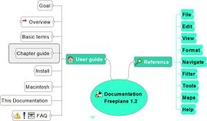
Документация Freeplane описывает детали каждой функции Freeplane. Используйте Find и Filter, чтобы узнать, существует ли функция для искомого типа действия. Документация также содержит часто задаваемые вопросы (FAQ).
Freeplane позволяет экспортировать карту для публикации в Интернете или интранете. Если у вас есть несколько карт для публикации и обслуживания, более выгодно использовать процедуру, описанную здесь . Карты в Расширениях Учебника Freeplane публикуются таким образом.
Создание анимации Freeplane или видео
Карты Freeplane можно использовать как основу для создания анимации или видео. Существует руководство по созданию руководств для создания высококачественной анимации или видео Freeplane с низким объемом памяти.
Открытые форумы дают быстрый и легкий доступ к активному сообществу пользователей Freeplane. Вы можете задавать вопросы или оставлять предложения.
Многие страницы в этой вики помечены в конце страницы категориями. Вы можете нажать на категорию в конце страницы, чтобы отобразить индекс всех страниц той же категории. Категории и страницы обобщены в вики- карте Index Wiki справа.
Вам предлагается использовать эту вики для обмена информацией и советами о Freeplane и ее функциях. Вы можете создавать новые страницы и редактировать все существующие страницы, включая эту, после регистрации и входа в систему .
ПРИМЕЧАНИЕ: из-за спам-атак редактирование этой вики теперь разрешено только для зарегистрированных редакторов вики. Если вы хотите стать редактором вики, напишите в команду Freeplane.
Вы можете подписаться на атомную ленту, чтобы получать информацию обо всех изменениях в этой вики. Используя этот веб-сервис, вы можете получать ежедневные уведомления по электронной почте при каждом изменении содержимого. Этот же сервис можно использовать и для уведомлений о любых изменениях страниц проекта в SourceForge.
Блог о бесплатных программах
Полезные обзоры к полезным программам. Перейти к содержимому
Заполняем соты своего разума с Freeplane
Freeplane – еще один софтверный представитель, работающий с интеллект-картами (mindmap). С помощью этой программы легко можно создавать «карты мышления», делиться своими мыслями и планировать те вещи, которые необходимо сделать дома или на работе. Сама структура диаграмм связей разработана Тони Бьюзеном, а созданию программ для упрощения создания карт мыслей (вот как много в русском языке переводов слова mindmap) посвящено несколько проектов, в том числе и Freeplane, о котором и пойдет речь в этом обзоре.
Freeplane является бесплатным кросс-платформенным приложением, написанным с использованием языка Java, со ответственно, для запуска программы в системе необходимо наличие JRE модулей. Скачать актуальную русскоязычную версию программы Freeplane всегда можно здесь.
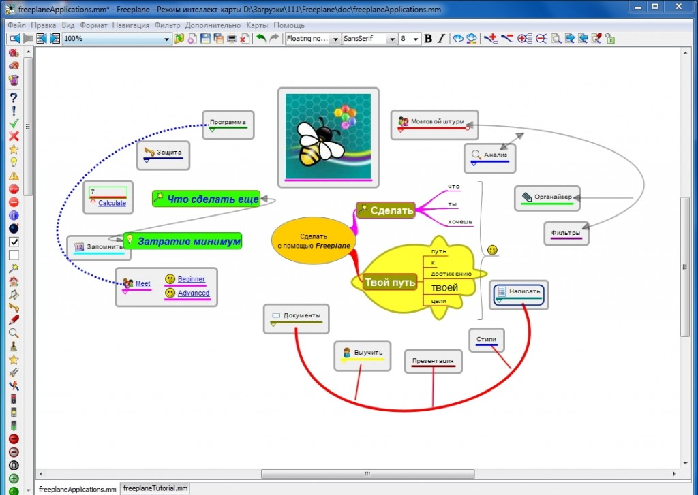
Freeplane обладает стандартным набором функций, предназначенных для составления мозговых штурмов, таких как построение карт с разветвленной структурой, поддержка гиперссылок, в том числе, на внешние источники, управление временем, составление расписаний и многих других.
Основные особенности Freeplane:
— представление информации в наглядном виде;
— поддержка работы во вкладках, одновременно можно работать сразу с несколькими картами;
— форматирование текста и узлов с использованием большого количества стилей;
— группировка узлов;
— использование текста, формул, иконок, графики и гиперссылок в блоках;
— импорт и экспорт в большое количество форматов данных (графические PNG, JPEG, языки разметки XML, HTML, XHTML, а также в PDF);
— улучшенное восприятие информации, за счет использования порядка 30 иконок;
— возможность скрытия ветвей и узлов;
— связывание узлов графическим способом;
— поиск по узлам;
— применением фильтров;
— шифрование отдельных узлов и карт в целом (установка паролей для защиты);
— расширение функциональности путем использования дополнений;
— поддержка набора макрорасширений системы компьютерной верстки LaTeX, что является уникальной функцией проекта, не встречающейся в аналогичных программах;
— совместное использование программы в сети.
Для начала работы вам понадобится всего три клавиши клавиатуры. Insert – для создания узлов, F2 – для их редактирования и Delete – для удаления. Всеми остальными навыками работы можно овладеть уже в процессе составления ассоциативных карт. Запись опубликована 14.11.2013 в рубрике Офисные/органайзеры.
OpenRocket – запускаем виртуальную ракету
В советские времена были широко распространены кружки юных техников, члены которых конструировали все, что только возможно. Особенно почетно было быть участником кружка, в котором создавались модели летательных аппаратов. Сегодня у детей, подростков и студентов таких кружков практически нет, но им на помощь приходят создатели программного обеспечения, моделирующего различные процессы. OpenRocket является ярким примером приложений, направленных на получение знаний по прикладным наукам. Эта программа позволяет собирать модель ракеты из готовых блоков, после чего выполнять ее запуск, тоже в условиях моделирования. В результате, можно получить данные о скорости полета, величинах ускорения, а также графики изменения высоты, в зависимости от времени.
OpenRocket – полностью бесплатная кросс-платформенная программа, написанная на языке Java. Для установки OpenRocket на любой операционной системе необходим один единственный файл. Найти его можно здесь. Естественно, на компьютере должна быть установлена Java версии 6 или более поздней.
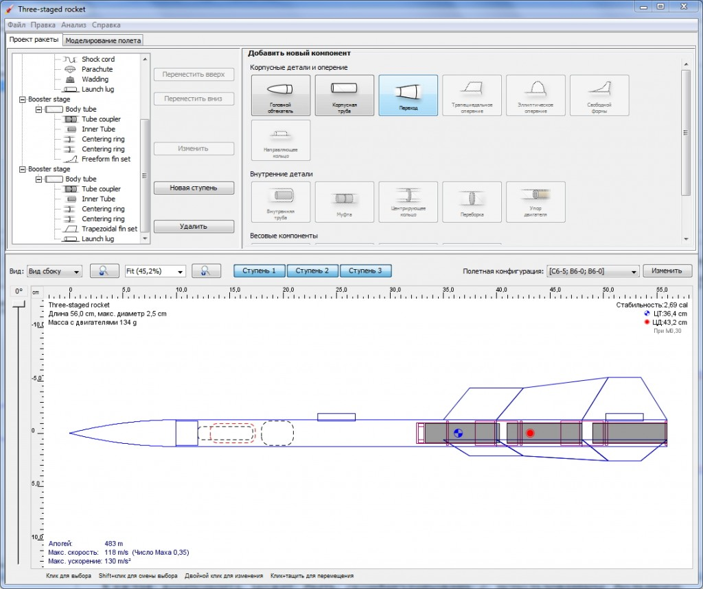
Для конструирования ракеты, в вашем распоряжении будут:
— корпусные детали и оперение (головной обтекатель, корпусная труба, переходы, трапециевидное, эллиптическое и свободное оперение, направляющее кольцо);
— внутренние детали (трубы, муфты, переборки, упоры двигателя);
— весовые компоненты (парашют, тормозная лента, стропы).
Каждая компонента может быть сконфигурирована с использованием большого количества параметров, таких как габаритные размеры, материал, отделка и так далее. Программа OpenRocket имеет базу двигателей, устанавливаемых в ракету в несколько кликов. Приложение само контролирует, чтобы, например, диаметр трубы, в котором он будет находиться, соответствовал диаметру самого двигателя.
OpenRocket позволяет производить настройки не только ракеты, но и симулировать параметры, в которых будет выполняться полет – температура воздуха, направление и скорость ветра, атмосферное давление. Когда все элементы ракеты подобраны, можно переходить к моделированию полета, который также имеет множество параметров. Существует возможность выбрать различные методы расчета, указать стартовую площадку и стартовый стержень, указать, будет ли полет совершаться с двигателем или без него.
Полученные данные, в виде таблиц или графиков, можно использовать для изучения закономерностей и исправления ошибок, допущенных при проектировании ракет. При этом, в программе можно воссоздать известные модели и выявить некоторые параметры, которые критически на них воздействуют. Конечно, OpenRocket создается не только для домашнего использования, эта программа реально поможет будущим конструкторам получить навыки проектирования, которые затем будут воплощены в реальные модели.
В планах у разработчиков программы добавление расчета аэродинамических показателей и анимации полета ракеты что должно в значительной мере улучшить юзабилити программы. Запись опубликована 14.11.2013 в рубрике Разное/утилиты.
GCompris – обучаем детей в игровой форме
Компьютер, как средство обучения детей, используется достаточно часто. Однако набор образовательных программ не так широк, как нам бы хотелось. Заполнить пробелы в дошкольном и начальном образовании взялись создатели бесплатного программного обеспечения, которые выпустили обучающую программу GCompris, собравшую в себе более 100 упражнений для детей возрастом от 2 до 10 лет.
Последнюю версию GCompris всегда можно найти на офсайте. Здесь на русском языке полезной информации мало, поскольку ее содержимое переведено автоматически и выглядит оно просто ужасно. Для установки программы понадобится примерно 300 Мб свободного пространства на вашем жестком или твердотельном диске. Устанавливайте GCompris так, чтобы путь к программе не содержал русских названий папок, поскольку в таком случае модули не подгружаются и программа не запустится. После первого запуска можно сделать несколько настроек, например, изменить полноэкранный режим, который активирован по умолчанию, на оконный, изменить уровень музыки и звуков или вовсе отключить их.
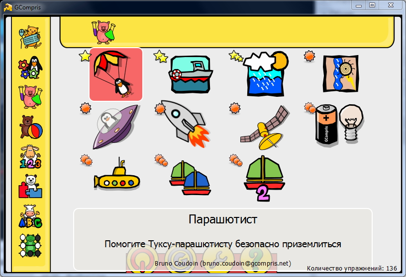
Стоит сделать небольшую оговорку. Версия для Linux имеет 136 упражнений, а вот в варианте программы для Windows и MacOS всего 77, такие вот ограничения, сделанные для того чтобы вынудить пользователей, вернее их родителей, внести пожертвования (9€) и получить код, активирующий остальные упражнения. Такое вот неполное соответствие GNU.
GCompris состоит из следующих восьми обучающих блоков:
— изучение компьютера (упражнения с клавиатурой и игры для развития движений мышью);
— изучение цветов, звуков и тренировка памяти (часы, страны, связанные предметы);
— изучение физических явлений (круговорот воды в природе, гравитация, электричество и прочие);
— развлечения (попадание мячом в ворота, создание рисунков, текстовый процессор);
— упражнения по математике (простой счет, геометрия и подсчет предметов);
— головоломки (собери рисунок, ханойская башня, пятнашки);
— упражнения на чтение (название предметов, практика чтения, чтение по вертикали и горизонтали, заполнение пропущенной буквы);
— стратегические игры (шахматы, последний шар, четыре в ряд).
Как вы могли убедиться, набор упражнений самый разнообразный. Большинство из них представлено в игровой форме, что очень привлекает детей и делает процесс обучения весьма интересным. Запись опубликована 14.11.2013 в рубрике Разное/утилиты.
PWGen – генерируем безопасные пароли
Для входа на большинство ресурсов нам необходимо задавать имя пользователя и пароль. Если с именем все более-менее просто (одни пользуются одним и тем же именем, другие несколькими), то с паролями нужно быть очень осторожным, чтобы ваши аккаунты не были украдены. Почти все рекомендуют использовать различные пароли для входа на разные ресурсы, при этом, необходимо делать пароли как можно сложнее. Сложным считается тот пароль, который нельзя подобрать быстрым перебором слов или вычислить, прибегнув к простым логическим рассуждениям.
Доказано, что наиболее часто в качестве пароля используются дни рождения, имена родственников или вообще наборы 123456 или qwerty. Но, все-таки, необходимо придумывать более сложные пароли, содержащие бессмысленный набор символов и цифр, да еще и с разными регистрами – такие пароли считаются наиболее безопасными. Чтобы самим не придумывать такие пароли, можно воспользоваться автоматизированным программным средством PWGen, позволяющим генерировать случайные пароли высокой степени надежности.
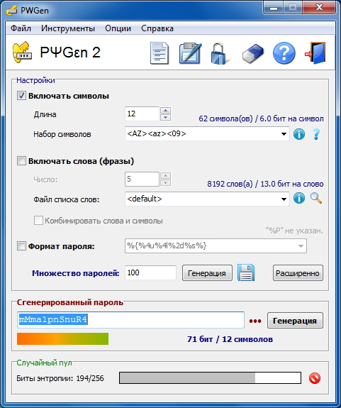
PWGen – профессиональное средство генерирования паролей с высокой степенью криптографической безопасности. Скачать файл для установки PWGen можно отсюда. После установки в программе будет только 2 языка интерфейса, но русский поставить не составит труда. Для этого нужно перейти на страницу скачивания по ссылке Additional languages, скачать архив с русским языком и распаковать его в папку с установленной программой. Затем из меню Options – Language – выбираем Русский и, согласившись с перезагрузкой программы, получаем полностью русифицированный интерфейс. Также доступны и другие языки. Программа PWGen предназначена для работы во всех версиях Windows (начиная с 95 OSR 2), в том числе на 64 разрядных системах.
На каких принципах построена работа программы? Пароли генерируются на основе указанных пользователем настроек:
— включать символы или нет, при этом, можно задать набор символов, используя заполнители;
— длина пароля от 1 до 4094 символов;
— включать фразы или нет, можно использовать имеющийся список слов или загрузить собственный;
— формат пароля (использовать только гласные или согласные, только строчные или прописные и другие условия).
Указав все параметры, пользователь может нажать кнопку «Генерация» и получить пароль. Также имеется возможность получения множества паролей одновременно с сохранением списка в файл.
PWGen имеет еще несколько интересных функций – шифрование и расшифровывание буфер обмена, создание файла со случайными данными и создание файла триграмм.
Подытоживая обзор программы PWGen можно отметить, что было бы очень удобно, если бы функциональность программы была бы расширена модулем для хранения паролей, это бы сделало ее универсальным средством генерирования и хранения паролей. А так получается, что генерировать пароли нужно в одной программе, а хранить в другой. Запись опубликована 05.11.2013 в рубрике Разное/утилиты.
Qoobar – редактируем и создаем собственные теги у музыкальных файлов
Qoobar – бесплатная программа для создания и редактирования тегов музыкальных файлов. Особенность Qoobar состоит в том, что она ориентирована на редактирование тегов в файлах классической музыки, т.е. с ее помощью можно вносить не только название композиции, имя исполнителя и альбом, но и имя композитора, название оркестра, исполняющего музыкальное произведение, дирижера, тональность, темп и другие данные.
Скачать Qoobar можно со странички по адресу. Здесь присутствуют версии программы для Linux, Ubuntu, Windows, OS/2 и Mac OS X, т.е. ее можно назвать полностью кроссплатформенной. Также для скачивания доступен исходный код, ведь программа распространяется, как бесплатное приложение с открытым исходным кодом. Qoobar имеет 8 языков интерфейса, в т.ч. русский, который можно установить, как при инсталляции программы, так и изменить позднее в настройках.
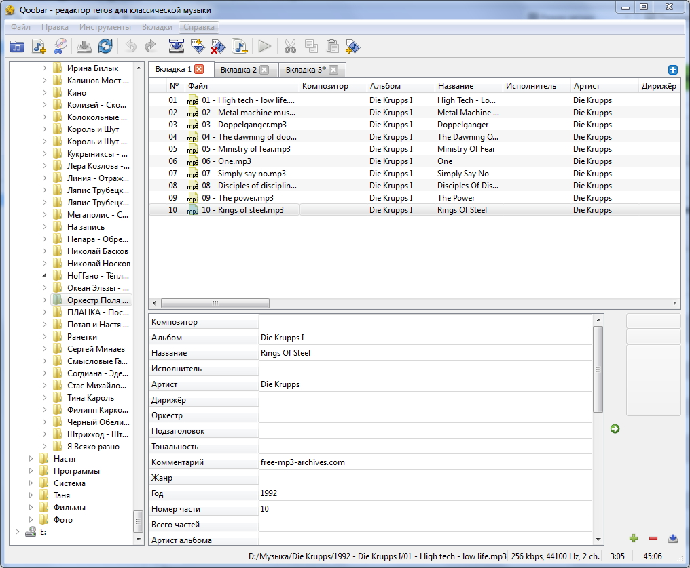
С Qoobar каждый пользователь сможет:
— редактировать ID3v2.4, APE, ASF, теги MP4 и комментарии Vorbis;
— редактировать теги практически всех популярных музыкальных форматов;
— выполнять групповое изменение тегов;
— копировать любые теги из одного файла в другой;
— редактировать такие теги, как Композитор и Альбом, Название и Жанр, Дирижер и Оркестр, Настроение, Темп и многие другие;
— добавлять свои теги и сохранять их;
— генерировать теги из имен файлов и путей к файлам;
— импортировать теги и обложки дисков из баз Discogs, Musicbraiz, GD3 и freedb;
— переименовывать, копировать и перемещать файлы, исходя из их тегов, создавать папки, если в этом возникает необходимость;
— конвертировать теги, изменяя их кодировку в UTF8, причем программа может исправлять последствия неправильного отображения символов;
— отменять изменения любого тега;
— создавать списки воспроизведения;
— запускать проигрывание выделенных файлов, используя внешний плеер (его необходимо указать в настройках);
— добавлять и удалять обложку в файл, сохранять обложку из файла на диск, изменять размер обложки;
— транслитеровать русские теги для того, чтобы их можно было видеть в устройствах без поддержки кириллицы;
— разрезать образ диска по cue файлу.
Qoobar позволяет работать одновременно с несколькими списками в отдельных вкладках. Можно загружать файлы по отдельности, по папкам или использовать встроенный проводник. Запись опубликована 05.11.2013 в рубрике Аудио.
Эффектное слайд-шоу своими руками за несколько минут
Bolide Slideshow Creator – универсальное средство для создания красивого слайд-шоу в формате видео файла. С помощью этой абсолютно бесплатной программы у вас появится уникальная возможность создавать красочные слайд-шоу, дополненные музыкальным сопровождением и большим количеством эффектов переходов между фотографиями. Чтобы скачать установочный файл, просто перейдите на страницу официального сайта программы. При установке вам не нужно следить за появлением дополнительных программ, навязываемых многими бесплатными приложениями, не нужно вводить адреса электронной почты, которую впоследствии завалят спамом, т.е. все предельно просто и понятно.
Кому может понравиться Bolide Slideshow Creator? Тем, кто захочет сделать видео слайд-шоу недавно прошедшего события (день рождения, вечеринка, свадьба). Тем, кому необходимо создать не просто презентацию, а красочное представление. Тем, кто вместо загрузки на страничку социальной сети сотни фотографий хочет загрузить всего один файл. Тем, кто желает посмотреть сам и показать другим слайд-шоу на телевизоре с флешки или медиаплеера. И, конечно же, она понравится всем, кто любит бесплатный софт.
Программа предельно проста в использовании, в ней нет большого количества настроек, все необходимые инструменты находятся перед глазами пользователя. Bolide Slideshow Creator работает практически с любыми графическими изображениями, поддерживает основные аудио форматы для создания музыкального сопровождения. Сохранить же слайд-шоу можно в одном из трех видео контейнеров AVI, MKV или WMV, причем разрешением может быть самым высоким – FullHD.
Сделать слайд-шоу можно, выполнив четыре простых действия:
1. Выберите папку с фотографиями и укажите музыкальные файлы, сформировав, таким образом, библиотеку для дальнейшей работы программы.
2. В проект слайд-шоу перенесите фотографии в нужном порядке.
3. Расставьте переходные эффекты для каждой фотографии или предоставьте программе сделать это автоматически.
4. Выбрав разрешение получаемого видео, нажимаем кнопку «Сделать видео файл», указываем формат, качество видео и ждем окончания процесса.
Через некоторое время, зависящее от количества фотографий и длительности каждого фрагмента (этот параметр также можно выставить вручную), вы сможете посмотреть результат работы программы. Запись опубликована 03.11.2013 в рубрике Видео, Графика/изображения.
mtPaint – растровый редактор Марка Тайлера
mtPaint – графический редактор, ориентированный на попиксельное (растровое) изменение изображений. Программа имеет миниатюрный размер, по сравнению с гигантами графического софта, однако тех функций, которые в ней имеются, достаточно для 90% пользователей. Тот же пресловутый Фотошоп, в основном используют для изменения размера фотографий, да именно так многие и делают, не подозревая, что его предназначение лежит совсем в другой плоскости. Но вернемся к mtPaint, являющейся бесплатной для использования, изменения и распространения программой.
Ссылку на скачивание установочного файла забираем здесь. На установку mtPaint уйдет меньше минуты времени, а после запуска сразу можно приступать к созданию или редактированию изображений.
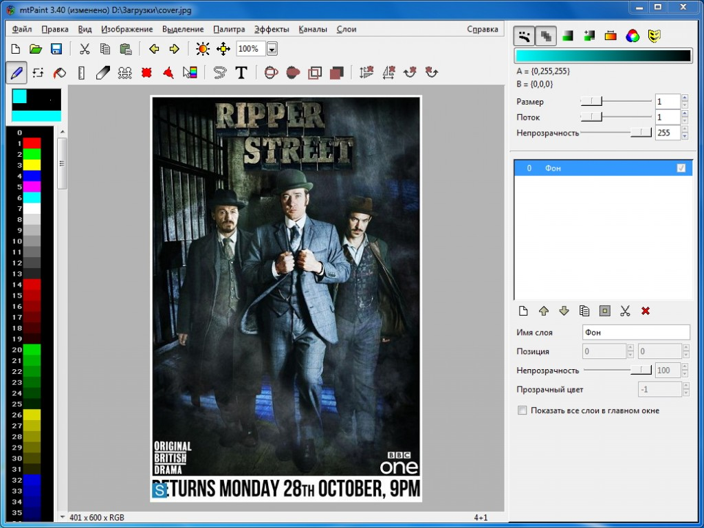
Ниже приведем список возможностей программы mtPaint:
— работа с изображениями в растровых форматах;
— одновременное хранение в буфере обмена 12 картинок;
— создание скриншотов (снимков экрана);
— перемещение курсора при помощи клавиатуры с точностью до 1 пикселя;
— изменение размера изображения с фиксированием соотношения сторон и без него, с возможностью выбора вида преобразования;
— изменение размера холста (изображение при этом не меняется);
— преобразование в индексированное изображение с выбранной палитрой;
— поворот с шагом в 90°, а также произвольное вращение с точностью до 1 секунды;
— наклон изображения;
— сегментирование с настройкой цветового пространства и меры расстояния;
— трансформация цветов;
— инвертирование и преобразование изображения в оттенки серого, в том числе с гамма-коррекцией;
— использование небольшого количества фильтров (резкость, разница по Гауссу, размывание, барельеф, эрозия, сглаживание и пр.);
— использование до 100 слоев;
— управление палитрой цветов;
— добавление текста.
Этих функций вполне достаточно для выполнения типичных операций обработки изображений среднестатистическим пользователем. Профессионалы, конечно, могут возразить, что им много чего не хватает, но потому они и профессионалы, что зарабатывают этим на жизнь и могут позволить себе купить программу, стоимостью около 1000 долларов. Мы же скажем спасибо Марку Тайлеру, разработавшему mtPaint (от его имени и две первые буквы в названии), будем пользоваться продуктом и продолжим поиски такого же качественного бесплатного программного обеспечения. Запись опубликована 02.11.2013 в рубрике Графика/изображения.
Cdrtfe – все для работы с оптическими дисками
Разработчики программы Cdrtfe позиционируют ее, как приложение для записи (прожига) всех типов оптических дисков. Однако функции Cdrtfe этим не ограничиваются, эту программу вполне можно назвать универсальным средством для работы с оптическими дисками, поскольку она делает с ними практически все, но обо всем по порядку.
Cdrtfe по своей сути – это графическая оболочка, объединяющая в себе несколько консольных программ, т.е. приложений, работающих из командной строки. Сюда входят дисковые утилиты cdrecord, readcd, cdda2wav, mkisofs, входящие в пакет cdrtools, а также VCDImager, Mode2 CD Maker и другие. Cdrtfe работает только на Windows, может быть установлена, как обычная или портативная версия. Соответствующие установочные файлы вы можете скачать со страницы проекта. Cdrtfe – бесплатная программа, имеющая русский интерфейс.
Правда перевод не совсем полный, некоторые пункты меню так и остались непереведенными. Почему так получилось, непонятно, ведь на других языках, например, немецком и украинском, все пункты переведены полностью. А вот всплывающие подсказки, при выборе любого из языков, останутся английскими.
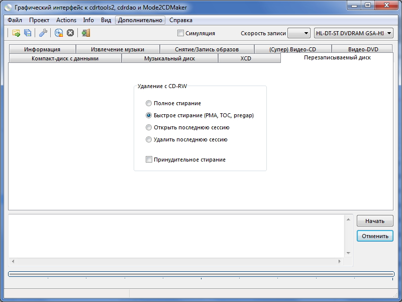
Итак, что же умеет делать Cdrtfe, какими функциями она обладает?
— запись любых оптических дисков с данными;
— запись дисков с предварительным созданием образа в формате ISO или без него;
— работа с музыкальными дисками (запись и обратная ей функция — риппинг в формат WAV, FLAC, MP3, OGG, а также нормализация звука по технологии Replay Gain);
— прожиг видеодисков в форматах VCD, SVCD и DVD;
— создание копии диска, т.е. образа, а также создание образа из папок и файлов, указанных пользователем;
— использование режимов записи TAO (дорожка целиком), DAO (диск целиком), Raw-режим;
— работа с мультисессиями;
— стирание (быстрое и полное) перезаписываемых носителей, в том числе BD-RE;
— симулирование процесса записи сразу на нескольких приводах;
— сохранение и загрузка проектов;
— получение информации о приводах и оптических носителях;
— создание загрузочных дисков;
— работа из командной строки.
Кроме обычных, Cdrtfe поддерживает специальные режимы записи. Первый – запись данных, превышающих емкость оптического диска. Как правило, реальный размер диска примерно на 1% больше и он так и остается незаполненным. Правда, записанные в таком виде диски, имеют большую вероятность быть непрочитанными на других приводах. Второй режим – создание eXtended-CD, т.е. расширенная (уплотненная) запись, позволяющая записать на стандартный CD диск до 795 Мб (применимо лишь для мультимедийного содержимого).
Как мы смогли убедиться, Cdrtfe объединяет в себе функции программ для записи дисков, приложений для создания образов, а также граббинга (риппинга), что позволяет отказаться от использования, как минимум, трех разных единиц софта. Запись опубликована 02.11.2013 в рубрике Разное/утилиты.
fre:ac – конвертируем аудио в удобный формат
С появлением разнообразных портативных устройств, служащих для воспроизведения музыки, появилась и некоторая неразбериха в форматах файлов, которые они поддерживают. CD диски записываются в одном формате, для обычных MP3 плееров нужны файлы другого типа, а для новомодных iPod хоть и нет особых проблем с воспроизведением (они понимают почти все), но вот некоторые типы файлов, взятые из них, проблематично открыть на других устройствах. Все эти неудобства можно решить с помощью универсальной программы fre:ac, предоставляющей возможность одновременно и конвертировать музыку из одного поддерживаемого формата в другой, и выполнять граббинг (риппинг) музыки с CD.
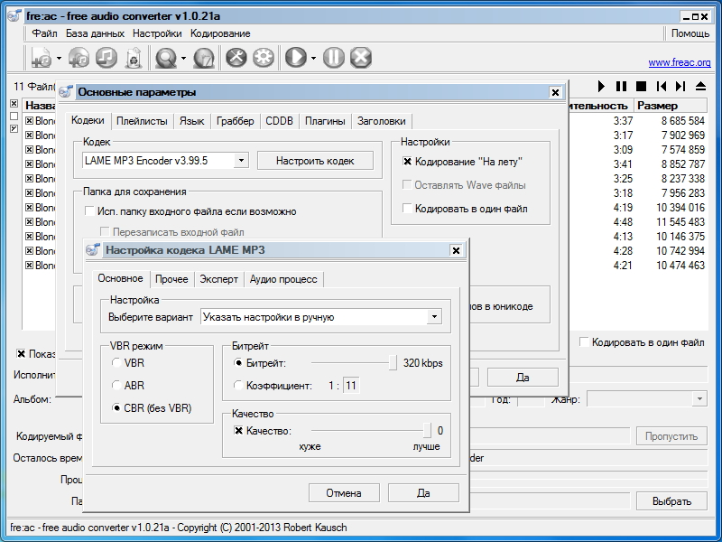
fre:ac получила свое название от слов free audio converter. Эта небольшая программа абсолютно бесплатна, имеет открытый исходный код и распространяется по лицензии GNU. Это означает, что если у вас есть необходимые навыки программирования, то вы сможете самостоятельно вносить изменения в код программы. На официальном сайте проекта можно скачать инсталлятор и портативную версию для Windows, а также бинарные коды для Linux. Интерфейс программы переведен на 38 языков и устанавливается автоматически (если ваша ОС русская, соответственно, русским будет и язык интерфейса fre:ac). При этом, если вы нашли ошибки в переводе, то их легко исправить, используя модуль translator, который также поможет перевести интерфейс на любой другой язык.
Перейдем непосредственно к описанию возможностей fre:ac:
— конвертация музыкальных файлов форматов WMA, MP3, Ogg Vorbis, MP4/M4A, FLAC, WAV, AAC и Bonk, поддерживается конвертация одного из этих форматов в любой другой;
— интегрированный CD риппер (граббилка) с поддержкой распознавания дисков путем подключения к CDDB/freedb;
— возможность установки на сменные носители информации (портативный вариант);
— возможность кодирования списка файлов в один файл;
— создание списков воспроизведения;
— тонкая настройка каждого кодека;
— автоматическое заполнение тегов ID3v2 для тех случаев, когда диск есть в базе CDDB;
— использование плагинов.
Работать с fre:ac предельно просто. Необходимо загрузить список файлов, которые подлежат конвертированию, выбрать необходимый формат конечных файлов и запустить процесс кодирования. Полученные файлы переносим на свое любимое устройство для прослушивания музыки и наслаждаемся ею столько, сколько душе угодно. Запись опубликована 31.10.2013 в рубрике Аудио.
Недовольство стандартным текстовым редактором (Блокнот), поставляемым вместе с Windows, выказывают многие. Особенно неудобен он для программистов, вернее сказать, его возможности уж очень невелики. Набор самого простого текста – вот его основные функции. Именно поэтому в сети появляется немалое количество текстовых редакторов, отличающихся от Блокнота огромным функционалом. Один из таких представителей – бесплатная программа SynWrite, ориентированная в первую очередь на тех пользователей, которые на профессиональном уровне занимаются программированием. Набор полезных функций и инструментов даст возможность программистам повысить качество своей работы, затратив минимальные усилия.
Для скачивания обычной или портативной версии SynWrite достаточно перейти на страницу, посвященную этому проекту. Для апробации возможностей программы мы скачали портативный вариант, поэтому для активации русского интерфейса нам пришлось зайти в меню Options, затем в раздел Customize и установить русский язык вручную. При применении измененных параметров программы наблюдается некоторая задержка, в течение нескольких секунд софта не реагирует на запросы. Такой вот, замеченный недостаток, но он, скорее, несущественный.
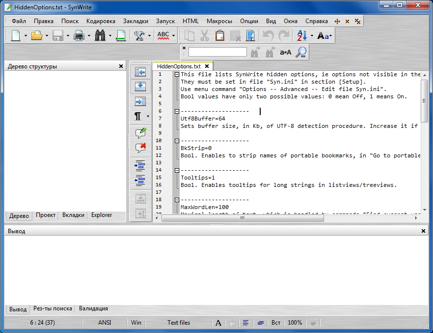
Естественно, самой востребованной функцией SynWrite окажется подсветка синтаксиса языков программирования. Все, что нужно пользователю – открыть заранее написанный код, а программа самостоятельно распознает все синтаксические конструкции и, кроме того, выделит каждую из них своим цветом. Часть кода можно сворачивать и разворачивать, что позволяет сосредоточится лишь на тех местах программы, разработка которых ведется в текущий момент времени. SynWrite, конечно же, укажет и на ошибки синтаксиса, если таковые будут.
Для упрощения навигации по документу, программа имеет панель для отображения списка структуры в виде дерева. Список создается в процессе написания кода, а при редактировании он обновляется. Также доступен режим мини-карты, который будет полезен при работе с большими, по объему, документами.
Все функции, перечисленные выше, будут полезными программистам, однако это вовсе не означает, что программа SynWrite не предназначена для простых пользователей. Далее мы приведем список функций, которые пригодятся всем:
— автоматическое завершение слов и фраз;
— проверка правописания (автоматическая и ручная);
— поиск и замена слов и фрагментов текста, работает даже в незагруженных в программу файлах;
— удаление одинаковых или пустых строк;
— вставка комментариев;
— запись макросов;
— html кодирование и декодирование;
— одновременная работа сразу с несколькими открытыми документами;
— установка закладок и маркеров;
— добавление и удаление отступов, в том числе отступа первой строки (абзац);
— ручная установка языка программирования – лексер;
— сортировка строк;
— просмотр истории буфера обмена;
— возможность интеграции с Проводником, при этом файлы с расширением .txt, .ini, .syn и другие, назначенные пользователем, будут открываться при помощи SynWrite. Запись опубликована 31.10.2013 в рубрике Офисные/органайзеры.